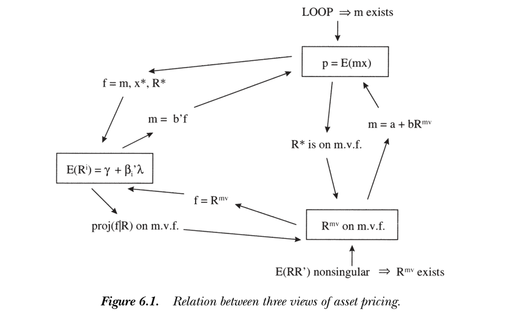
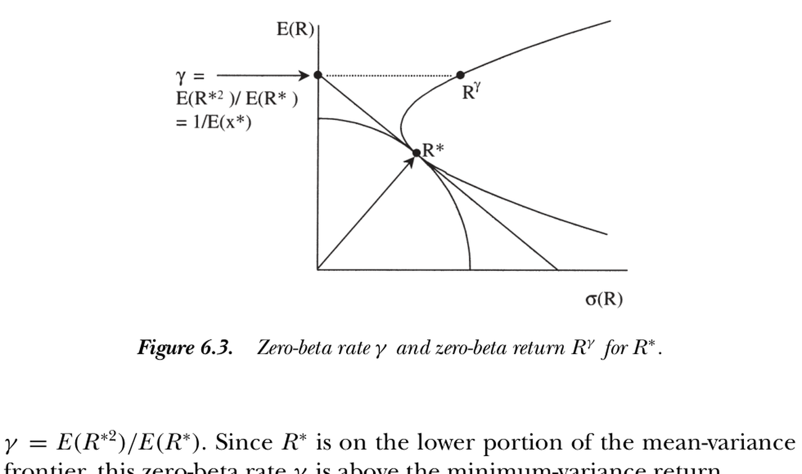

6. Discount Factors, Betas, and Mean-Variance Frontiers
6. Discount Factors, Betas, and Mean-Variance Frontiers
本章导读 本章（Cochrane 第 6 章）的中心主题：三种表示完全等价——贴现因子 \(p=\mathbb E(mx)\)、期望收益-贝塔 \(E(R^i)=\gamma+\beta_i'\lambda\)、均值方差前沿。给定其一可构造其余（图 6.1）。§6.1 从贴现因子到贝塔（\(m,x^*,R^*\) 皆可作单因子）；§6.2 从均值方差前沿到贴现因子（\(m=a+bR^{mv}\) 当且仅当 \(R^{mv}\) 在前沿上）；§6.3 因子模型 \(\Leftrightarrow\) 线性贴现因子 \(m=b'f\)（全书与实证的桥梁）；§6.4 从贴现因子/贝塔回到前沿；§6.5 无无风险利率时的三个替身（零贝塔、最小方差、常数模仿组合）；§6.6 无无风险利率的特例。
6. Discount Factors, Betas, and Mean-Variance Frontiers
Overview The central theme of this chapter (Cochrane Ch 6): all three representations are equivalent — the discount factor \(p=\mathbb E(mx)\), the expected return-beta model \(E(R^i)=\gamma+\beta_i'\lambda\), and the mean-variance frontier. Given any one, you can construct the others (Figure 6.1). §6.1 from discount factors to betas (\(m,x^*,R^*\) all serve as single factors); §6.2 from the mean-variance frontier to a discount factor (\(m=a+bR^{mv}\) iff \(R^{mv}\) is on the frontier); §6.3 factor models \(\Leftrightarrow\) a linear discount factor \(m=b'f\) (the bridge between this book and empirical work); §6.4 back from discount factors/betas to the frontier; §6.5 three risk-free-rate analogues when none is traded (zero-beta, minimum-variance, constant-mimicking); §6.6 the no-risk-free-rate special cases.
下图汇总了三种视角之间的所有通路。一个贴现因子、一个贝塔的参照变量、一个前沿收益，携带相同信息，给定其一即可求出其余。
The figure below summarizes every path between the three views. A discount factor, a reference variable for betas, and a frontier return all carry the same information; given any one, you can find the others.

图 6.1 资产定价三种视角之间的关系。一价定律 \(\Rightarrow m\) 存在；\(E(RR')\) 非奇异 \(\Rightarrow R^{mv}\) 存在；各箭头给出从一种表示到另一种的构造。
Figure 6.1 Relation between three views of asset pricing. Law of one price \(\Rightarrow m\) exists; \(E(RR')\) nonsingular \(\Rightarrow R^{mv}\) exists; each arrow is a construction from one representation to another.
历史上，Roll (1977) 指出了均值方差前沿与贝塔定价的联系；Ross (1978)、Dybvig and Ingersoll (1982) 指出了线性贴现因子与贝塔定价的联系；Hansen and Richard (1987) 指出了贴现因子与前沿的联系。
6.1 从贴现因子到贝塔表示 / From Discount Factors to Beta Representations
\(m,x^*,R^*\) 都能充当单贝塔表示中的唯一因子。用 \(m\)。 由 \(1=E(mR^i)=E(m)E(R^i)+\operatorname{cov}(m,R^i)\)，乘除 \(\operatorname{var}(m)\)、令 \(\gamma\equiv1/E(m)\)：
Historically, Roll (1977) pointed out the link between the mean-variance frontier and beta pricing; Ross (1978) and Dybvig and Ingersoll (1982) the link between linear discount factors and beta pricing; Hansen and Richard (1987) the link between a discount factor and the frontier.
6.1 From Discount Factors to Beta Representations
\(m,x^*,R^*\) can each be the single factor in a single-beta representation. Using \(m\). From \(1=E(mR^i)=E(m)E(R^i)+\operatorname{cov}(m,R^i)\), multiply and divide by \(\operatorname{var}(m)\) and set \(\gamma\equiv1/E(m)\):
$$E(R^i)=\gamma+\underbrace{\frac{\operatorname{cov}(m,R^i)}{\operatorname{var}(m)}}_{\beta_{i,m}}\underbrace{\left(-\frac{\operatorname{var}(m)}{E(m)}\right)}_{\lambda_m}=\gamma+\beta_{i,m}\lambda_m.$$
这给出单贝塔表示。要点：消费模型可等价地表述为"平均收益线性于对 \((c_{t+1}/c_t)^{-\gamma}\) 的回归贝塔"，且斜率 \(\lambda_m\) 不是自由参数（应等于该因子的方差/均值之比）。边际效用增长的因子风险溢价 \(\lambda_m<0\)：正期望收益对应与消费增长正相关、与边际效用 \(m\) 负相关。
用 \(x^*\) 与 \(R^*\)。 常希望因子是支付而非消费增长这类实变量（避免实测困难）。由 \(x^*=\operatorname{proj}(m|X)\) 仍是贴现因子，\(1=E(mR^i)=E(x^*R^i)=E(x^*)E(R^i)+\operatorname{cov}(x^*,R^i)\)，解出
This gives a single-beta representation. Key point: the consumption model can equivalently be stated as "mean returns are linear in the regression betas on \((c_{t+1}/c_t)^{-\gamma}\)," and the slope \(\lambda_m\) is not a free parameter (it should equal that factor's variance-to-mean ratio). The factor risk premium for marginal utility growth is negative, \(\lambda_m<0\): positive expected returns go with positive correlation with consumption growth, hence negative correlation with marginal utility \(m\).
Using \(x^*\) and \(R^*\). It is often desirable to use a payoff as the factor rather than a real variable like consumption growth (avoiding measurement problems). Since \(x^*=\operatorname{proj}(m|X)\) is still a discount factor, \(1=E(mR^i)=E(x^*R^i)=E(x^*)E(R^i)+\operatorname{cov}(x^*,R^i)\), which solves to
$$E(R^i)=\gamma+\beta_{i,R^*}\bigl[E(R^*)-\gamma\bigr].\tag{6.4}$$
因 \(R^*\) 是最小二阶矩收益、落在前沿下半段，它有负的期望超额收益（因子风险溢价 \(\lambda_{R^*}=-\operatorname{var}(R^*)/E(R^*)<0\)）；\(\gamma=1/E(x^*)\) 是 \(R^*\) 的零贝塔利率。特例须排除：\(E(m),E(x^*),E(R^*)\) 不能为零（否则无风险利率为零或无穷）；\(\operatorname{var}(m)\) 等不能为零（纯风险中性，此时所有期望收益等于无风险利率）。
6.2 从均值方差前沿到贴现因子 / From Mean-Variance Frontier to a Discount Factor
Because \(R^*\) is the minimum-second-moment return on the lower frontier, it has a negative expected excess return (factor risk premium \(\lambda_{R^*}=-\operatorname{var}(R^*)/E(R^*)<0\)); \(\gamma=1/E(x^*)\) is its zero-beta rate. Special cases to rule out: \(E(m),E(x^*),E(R^*)\) cannot be zero (else a zero or infinite risk-free rate); \(\operatorname{var}(m)\) etc. cannot be zero (pure risk neutrality, where all expected returns equal the risk-free rate).
6.2 From Mean-Variance Frontier to a Discount Factor and Beta Representation
前沿收益 \(\Rightarrow\) 贴现因子 / A frontier return gives a discount factor 存在形如 \(m=a+bR^{mv}\) 的贴现因子，当且仅当 \(R^{mv}\) 在均值方差前沿上、且不是无风险利率（无无风险利率时，不是常数模仿组合收益）。There is a discount factor of the form \(m=a+bR^{mv}\) if and only if \(R^{mv}\) is on the mean-variance frontier and is not the risk-free rate (or, when there is none, not the constant-mimicking portfolio return).
几何直觉。 \(m=x^*\) 与 \(R^*\) 同向，前沿是 \(R^*+wR^{e*}\)。取前沿上的 \(R^{mv}\)，先拉伸（\(bR^{mv}\)）再减去一部分 1 向量（\(a\)）——因 \(R^{e*}\) 由单位向量生成，恰能消掉 \(R^{e*}\) 分量、回到 \(x^*\)。若 \(R^{mv}\) 不在前沿上，则 \(a+bR^{mv}\)（\(b\ne0\)）会带有 \(n\) 方向分量，而 \(x^*\) 无此分量；这就是"必须在前沿上"的原因。代数上，设 \(m=a+b(R^*+wR^{e*}+n)\)，强制其给 \(R^*,R^{e*}\) 定价定出 \(a,b\)，再验证它给任意 \(x^i=y^iR^*+w^iR^{e*}+n^i\) 定价要求 \(E(nn^i)=0\) 对所有 \(x^i\) 成立 \(\Rightarrow n=0\)。串联本节与 §6.1 即从前沿到贝塔。
6.3 因子模型与贴现因子 / Factor Models and Discount Factors
Geometric intuition. \(m=x^*\) points the same way as \(R^*\), and the frontier is \(R^*+wR^{e*}\). Take a frontier \(R^{mv}\), stretch it (\(bR^{mv}\)), then subtract some of the 1 vector (\(a\)) — since \(R^{e*}\) is generated by the unit vector, this kills the \(R^{e*}\) component and returns to \(x^*\). If \(R^{mv}\) were off the frontier, \(a+bR^{mv}\) (with \(b\ne0\)) would point partly in the \(n\) direction, which \(x^*\) does not — hence "must be on the frontier." Algebraically, set \(m=a+b(R^*+wR^{e*}+n)\), fix \(a,b\) by pricing \(R^*\) and \(R^{e*}\), then verify that pricing an arbitrary \(x^i=y^iR^*+w^iR^{e*}+n^i\) requires \(E(nn^i)=0\) for all \(x^i\Rightarrow n=0\). Chaining this section with §6.1 takes us from the frontier to a beta model.
6.3 Factor Models and Discount Factors
核心等价 / The central equivalence 贝塔定价模型等价于贴现因子的线性模型：\(E(R^i)=\gamma+\lambda'\beta_i\iff m=a+b'f\)。这是全书"贴现因子语言"与实证"因子模型语言"之间的桥梁。A beta pricing model is equivalent to a linear model for the discount factor: \(E(R^i)=\gamma+\lambda'\beta_i\iff m=a+b'f\). This is the bridge between this book's discount-factor language and the factor-model language common in empirical work.
最干净的情形是检验资产都是超额收益。归一化 \(E(m)=1\)，即 \(m=1+[f-E(f)]'b\)。给定 \(0=E(mR^e)\)，展开得 \(E(R^e)=-\operatorname{cov}(R^e,f')b\)，再"从协方差到贝塔"（乘 \(\operatorname{var}(f)^{-1}\operatorname{var}(f)\)）：
The cleanest case is when all test assets are excess returns. Normalize \(E(m)=1\), i.e. \(m=1+[f-E(f)]'b\). Given \(0=E(mR^e)\), expanding gives \(E(R^e)=-\operatorname{cov}(R^e,f')b\), and "from covariance to beta" (multiply by \(\operatorname{var}(f)^{-1}\operatorname{var}(f)\)):
$$E(R^e)=\beta'\lambda,\qquad \lambda=-\operatorname{var}(f)\,b.\tag{6.8}$$
其中 \(\beta\) 是超额收益对因子的多元回归系数。当检验资产是收益（非超额）时，须额外照看 \(m\) 中的常数与贝塔模型中的零贝塔利率，得 \(\gamma\equiv1/E(m)=1/a\)，\(\lambda\equiv-\gamma E[mf]\)。给定任一形式都能构造另一形式（不唯一：可给 \(m\) 加与收益正交的随机变量，或加 \(\beta\) 与 \(\lambda\) 均为零的伪因子）。
(6.12) 表明因子风险溢价 \(\lambda\) 可解释为因子的价格：检验 \(\lambda\ne0\) 即检验"因子是否被定价"。更确切地，\(\lambda\) 是因子价格减其风险中性估值（因子风险溢价）；若因子是价格为 1 的收益，则 \(\lambda=E(f)-\gamma\)。注意"因子"不必是收益、不必正交、不必序列无关或均值为零——这些是特例，而非因子定价存在的必要条件。
因子模仿组合。 当因子不是收益时，常用其模仿组合 \(f^*=\operatorname{proj}(f|X)\)（或对应的收益/超额收益）代替。\(m=b'f^*\) 在 \(X\) 上与 \(m=b'f\) 携带相同定价信息，因为 \(E(b'fx)=E[b'(\operatorname{proj}f|X)x]=E[b'f^*x]\)；它同样给出贝塔表示，只是贝塔变成对 \(f^*\)（而非 \(f\)）的回归系数。
6.4 从贴现因子/贝塔回到前沿 / Discount Factors and Beta Models to the Frontier
反向也成立：给定 \(m\)，构造 \(x^*=\operatorname{proj}(m|X)\)、\(R^*=x^*/E(x^{*2})\) 即得前沿上的（最小二阶矩）收益。若贝塔模型成立（\(m=b'f\)），则 \(x^*\) 线性于 \(f^*=\operatorname{proj}(f|X)\)，故 \(R^*\) 线性于因子模仿组合的支付/收益——即因子模仿组合的线性组合在前沿上。配上一个无风险利率替身，任一前沿收益都是这些因子收益的线性函数。
6.5 三个无风险利率替身 / Three Risk-Free Rate Analogues
无无风险利率（单位支付不在支付空间）时，三个收益各保留无风险利率的一个性质，且都在前沿上、形如 \(R^*+wR^{e*}\)：
where \(\beta\) are the multiple-regression coefficients of excess returns on the factors. When the test assets are returns (not excess), one must additionally track the constant in \(m\) and the zero-beta rate in the beta model, giving \(\gamma\equiv1/E(m)=1/a\) and \(\lambda\equiv-\gamma E[mf]\). Given either form one can construct the other (not uniquely: one may add to \(m\) anything orthogonal to returns, or add spurious factors with zero \(\beta\) and \(\lambda\)).
Equation (6.12) shows the factor risk premium \(\lambda\) is the price of the factor: testing \(\lambda\ne0\) is testing whether "the factor is priced." More precisely \(\lambda\) is the factor's price less its risk-neutral valuation; if the factor is a return with price one, \(\lambda=E(f)-\gamma\). Note the "factors" need not be returns, need not be orthogonal, and need not be serially uncorrelated or mean-zero — these are special cases, not requirements for a factor pricing representation.
Factor-mimicking portfolios. When factors are not returns, one often uses their mimicking portfolios \(f^*=\operatorname{proj}(f|X)\) (or the corresponding returns/excess returns). \(m=b'f^*\) carries the same pricing information on \(X\) as \(m=b'f\), since \(E(b'fx)=E[b'(\operatorname{proj}f|X)x]=E[b'f^*x]\); it gives a beta representation too, now with betas being regression coefficients on \(f^*\) rather than \(f\).
6.4 Discount Factors and Beta Models to the Mean-Variance Frontier
The reverse also holds: given \(m\), construct \(x^*=\operatorname{proj}(m|X)\) and \(R^*=x^*/E(x^{*2})\) — the minimum-second-moment return, on the frontier. If a beta model holds (\(m=b'f\)), then \(x^*\) is linear in \(f^*=\operatorname{proj}(f|X)\), so \(R^*\) is linear in the factor-mimicking payoffs/returns — i.e. a linear combination of factor-mimicking portfolios is on the frontier. With one risk-free-rate proxy added, any frontier return is a linear function of these factor returns.
6.5 Three Risk-Free Rate Analogues
With no risk-free rate (the unit payoff not in the payoff space), three returns each retain one property of the risk-free rate; all are on the frontier in \(R^*+wR^{e*}\) form:
$$R^{\gamma}=R^*+\frac{\operatorname{var}(R^*)}{E(R^*)E(R^{e*})}R^{e*},\qquad \gamma=E(R^{\gamma})=\frac{E(R^{*2})}{E(R^*)}=\frac{1}{E(x^*)}.\tag{6.23}$$
- 零贝塔收益 \(R^{\gamma}\)：前沿上与 \(R^*\) 不相关的收益，其期望即零贝塔利率 \(\gamma\)（图 6.3 中由 \(R^*\) 处切线延至纵轴所得）。注意一般 \(\gamma\ne1/E(m)\)：投影 \(m\) 到 \(X\) 保留 \(X\) 上的定价，但不保留 \(X\) 外（如无风险利率）的预测。
- 最小方差收益：\(R^{\min}=R^*+\dfrac{E(R^*)}{1-E(R^{e*})}R^{e*}\)，保留"在 \(R^{e*}\) 上的权重等于自身均值"这一性质（\(R^{\min}=R^*+E(R^{\min})R^{e*}\)）。
- 常数模仿组合收益：\(R=\operatorname{proj}(1|X)/p[\operatorname{proj}(1|X)]\)，即最接近单位支付的收益，权重为 \(\gamma\)：\(R=R^*+\dfrac{E(R^{*2})}{E(R^*)}R^{e*}\)。
- Zero-beta return \(R^{\gamma}\): the frontier return uncorrelated with \(R^*\); its mean is the zero-beta rate \(\gamma\) (found in Figure 6.3 by extending the tangency at \(R^*\) to the vertical axis). Note generally \(\gamma\ne1/E(m)\): projecting \(m\) onto \(X\) preserves pricing on \(X\) but not predictions outside \(X\) (like the risk-free rate).
- Minimum-variance return: \(R^{\min}=R^*+\dfrac{E(R^*)}{1-E(R^{e*})}R^{e*}\), retaining the property that its weight on \(R^{e*}\) equals its own mean (\(R^{\min}=R^*+E(R^{\min})R^{e*}\)).
- Constant-mimicking return: \(R=\operatorname{proj}(1|X)/p[\operatorname{proj}(1|X)]\), the return closest to the unit payoff, with weight \(\gamma\): \(R=R^*+\dfrac{E(R^{*2})}{E(R^*)}R^{e*}\).

图 6.3 \(R^*\) 的零贝塔利率 \(\gamma\) 与零贝塔收益 \(R^{\gamma}\)。\(\gamma=E(R^{*2})/E(R^*)=1/E(x^*)\)，由 \(R^*\) 处切线延至纵轴得到，位于最小方差收益之上。
Figure 6.3 Zero-beta rate \(\gamma\) and zero-beta return \(R^{\gamma}\) for \(R^*\). \(\gamma=E(R^{*2})/E(R^*)=1/E(x^*)\), found by extending the tangency at \(R^*\) to the vertical axis; it lies above the minimum-variance return.
有无风险利率时，三者都退化为 \(R^f=R^*+R^fR^{e*}\)，且 \(R^f=\dfrac{E(R^{*2})}{E(R^*)}=\dfrac{E(R^*)}{1-E(R^{e*})}=\dfrac{\operatorname{var}(R^*)}{E(R^*)E(R^{e*})}\)。
6.6 无无风险利率的特例 / Special Cases with No Risk-Free Rate
特例都源于"\(E(m)\)、单位支付价格或无风险利率不能为零或无穷"。在完全无套利市场 \(m>0\) 故 \(E(m)>0\)；有无风险利率时 \(E(m)=1/R^f\) 有限。不完全市场中可能恰好选到 \(E(m)=0\) 的 \(m\)——换一个即可。具体地：
- 从前沿到贴现因子：可用任何前沿收益，除了常数模仿组合收益（它导致 \(m\) 无穷）。
- 从前沿到贝塔模型：可用任何前沿收益作参照，除了最小方差收益（它导致零贝塔利率无穷）。这就是著名的 Roll (1977)、Hansen-Richard (1987) 定理。
二者排除的收益不同，正反映了最小方差收益（对 1 投影收益所得，离 1 的延长线最近）与常数模仿组合收益（对支付空间投影 1 所得，最接近 1 的支付）之别。
小结 / Summary
三种语言——贴现因子、贝塔、均值方差前沿——携带同样信息，可自由互换（图 6.1）。最重要的桥梁是 §6.3：因子模型 \(\iff m=b'f\)，把 CAPM/APT/ICAPM 等都纳入 \(p=\mathbb E(mx)\) 框架。这些等价定理的实证含义将在第 7 章展开。
With a risk-free rate, all three reduce to \(R^f=R^*+R^fR^{e*}\), and \(R^f=\dfrac{E(R^{*2})}{E(R^*)}=\dfrac{E(R^*)}{1-E(R^{e*})}=\dfrac{\operatorname{var}(R^*)}{E(R^*)E(R^{e*})}\).
6.6 Mean-Variance Special Cases with No Risk-Free Rate
The special cases all stem from "\(E(m)\), the price of a unit payoff, or the risk-free rate must not be zero or infinite." In a complete arbitrage-free market \(m>0\) so \(E(m)>0\); with a risk-free rate \(E(m)=1/R^f\) is finite. In an incomplete market you might happen to pick an \(m\) with \(E(m)=0\) — just pick another. Specifically:
- Frontier to discount factor: any frontier return works except the constant-mimicking return (it gives infinite \(m\)).
- Frontier to beta model: any frontier return works as reference except the minimum-variance return (it gives an infinite zero-beta rate). This is the famous Roll (1977), Hansen-Richard (1987) theorem.
The two exclude different returns, reflecting the distinction between the minimum-variance return (projecting returns on 1; closest to extensions of 1) and the constant-mimicking return (projecting 1 on the payoff space; the payoff closest to 1).
Summary
The three languages — discount factor, beta, mean-variance frontier — carry the same information and are freely interchangeable (Figure 6.1). The most important bridge is §6.3: a factor model \(\iff m=b'f\), folding CAPM/APT/ICAPM into the \(p=\mathbb E(mx)\) framework. The empirical implications of these equivalence theorems come in Chapter 7.
习题 / Problems
- 在"\(R^{mv}=R^*+wR^{e*}\) 蕴含 \(m=a+bR^{mv}\)"的论证中，是否要排除风险中性情形？（提示：风险中性时 \(R^{e*}\) 是什么？）
- 用因子模仿组合 (6.13) 时，预测的期望收益与用原因子相同。但其 \(\gamma^*,\lambda^*,\beta^*\) 是否与原 \(\gamma,\lambda,\beta\) 相同？
- 设 CAPM 成立，\(m=a-bR^m\) 给一组资产定价、且有无风险利率 \(R^f\)。用 \(R^m,R^f\) 的矩表示 \(R^*\)。
- 若把前沿表为因子模仿组合的线性组合，扫过前沿时各因子组合的相对权重是变还是不变？（先做有无风险利率的情形。）
- 对任一前沿收益 \(R^*+wR^{e*}\)，求其零贝塔收益与零贝塔利率，并验证有无风险利率时退化为 \(R^f\)。
- 风险中性且无无风险利率时，证明零贝塔、最小方差、常数模仿三收益再次等价（但不等于无风险利率）。此经济中 \(R^*\) 是多少？
Problems
- In the argument that \(R^{mv}=R^*+wR^{e*}\) implies \(m=a+bR^{mv}\), must we rule out risk neutrality? (Hint: what is \(R^{e*}\) when the economy is risk neutral?)
- With factor-mimicking portfolios (6.13), the predicted expected returns match those from the factors themselves. But are the \(\gamma^*,\lambda^*,\beta^*\) the same as the original \(\gamma,\lambda,\beta\)?
- Suppose the CAPM holds, \(m=a-bR^m\) prices a set of assets, and there is a risk-free rate \(R^f\). Express \(R^*\) in terms of the moments of \(R^m,R^f\).
- If you express the frontier as a linear combination of factor-mimicking portfolios, do their relative weights change as you sweep the frontier, or stay the same? (Start with the risk-free-rate case.)
- For an arbitrary frontier return \(R^*+wR^{e*}\), find its zero-beta return and zero-beta rate, and show your rate reduces to \(R^f\) when there is one.
- When the economy is risk neutral with no risk-free rate, show the zero-beta, minimum-variance, and constant-mimicking returns are again equivalent (but not equal to the risk-free rate). What is \(R^*\) in this economy?